3D와 2D 렌더러의 생명주기 분리
App.tsx는 위성 모드에 GlobeScene, 항공기 모드에 MapScene 하나만 마운트합니다. 모드별 렌더러와 자원 해제를 분리할 수 있지만, 재진입 시 지도 초기화와 데이터 로딩이 다시 발생합니다. 장점·비용은 구현에서 해석한 내용이며 성능 벤치마크 결과는 아닙니다.
Web / Data Visualization
Next.js API로 공개 위성·항공기 데이터를 중계하고, 브라우저에서 3D 지구·2D 지도로 탐색하는 프로젝트입니다. TLE 캐시와 모드별 렌더링을 구현했습니다.
Architecture / Flow

서로 다른 출처의 위성 궤도와 항공기 위치 정보를 한 화면에서 탐색할 수 있도록 표현하고자 했습니다. 데이터 종류에 맞는 지도와 선택 정보 패널을 구성했습니다.
TypeScript·Next.js 기반에서 위성·항공기 모드를 전환하도록 만들었습니다. 3D 지구와 2D 지도는 각 모드에 맞는 렌더러를 마운트해 표시하도록 구성했습니다.
Next.js API Route에서 공개 데이터를 중계하고 TLE를 서버 메모리에 캐싱했습니다. 브라우저는 배치로 받은 궤도 데이터로 위성 위치를 계산합니다. 항공기 수집과 화면 위치 보간의 주기를 구분했습니다.
Three.js와 MapLibre를 활용해 위치를 표시하고 선택 대상의 정보를 확인할 수 있도록 구현했습니다. 데이터 처리와 지도 표현을 연결하면서 서로 다른 렌더링 환경을 다뤘습니다.
Follow the data
App이 GlobeScene을 마운트하고 useSatellites가 /api/tle 배치 응답을 요청합니다.
서버는 NORAD ID별 메모리 캐시를 확인하고 필요한 TLE를 조회합니다. 결과를 ID별 JSON으로 반환합니다.
TLE를 SatRec으로 바꾼 뒤 매 프레임 좌표를 계산해 3D 객체를 움직이고, 위성 정보를 1초마다 Zustand에 반영합니다.
MapLibre 지도의 bbox에 맞춰 공개 항공기 데이터를 정규화해 저장하고, 지도와 선택 정보 패널을 갱신합니다.
Engineering decisions
App.tsx는 위성 모드에 GlobeScene, 항공기 모드에 MapScene 하나만 마운트합니다. 모드별 렌더러와 자원 해제를 분리할 수 있지만, 재진입 시 지도 초기화와 데이터 로딩이 다시 발생합니다. 장점·비용은 구현에서 해석한 내용이며 성능 벤치마크 결과는 아닙니다.
브라우저는 /api/tle를 한 번 호출하고 서버가 위성별 요청을 병렬 처리합니다. 일부 잘못된 응답도 1시간 캐싱해 반복 요청을 줄이는 구조입니다. 프로세스별 캐시이므로 재시작 시 사라지며, 일시적인 오류를 같은 시간 동안 유지할 수 있습니다.
항공기 수집은 10초, 화면 위치 보간은 1초 주기이며 지도 이동은 1초 debounce 후 bbox에 반영합니다. 네트워크 호출 주기와 표시 주기를 분리하지만 보간 위치는 외부에서 관측한 실제 위치가 아니라 화면용 추정입니다.
코드 기준 bbc70a9 · 구조와 주요 실행 경로를 정적으로 검토했습니다.